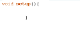
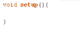
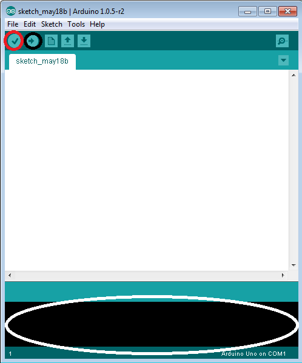
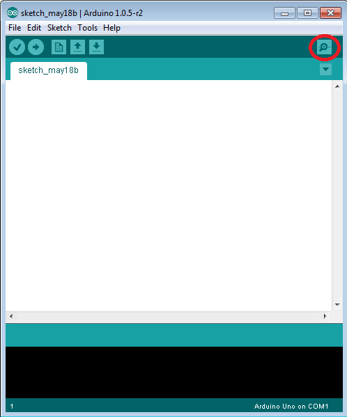
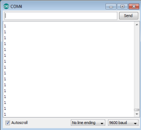

Arduino Programming Basics
Preface:
Before you start to code, there are some things that you should know about coding. The first things are functions; functions are areas of the code where tasks are assigned and each function has a specific task. There are two functions that we are going to use; void setup() and void loop(). void setup() is a function that executes once and will not execute again until the program resets (i.e. pressing the reset button on the Arduino). void loop() will continuously run as long as the program is running. These functions can only be used once in your program (you can’t have two void setup() in one file). An example of the void setup() function is below;
void setup(){//the word setup indicates that the code runs once
//code is written here
}//always start and end the function with a curly bracket; any code in between these brackets will be executed by the function The following is an example of void loop; it’s like void setup() except the code will continue to execute while the Arduino is on (it loops over and over, hence the name)
void loop(){//the word loop indicates that the code is continuously ran
//code is written here
}//always start and end the function with a curly bracketNow you might be wondering why I used two backslashes in the last example before my notes: this is because to comment out code you use two backslashes. Anything after the two backslashes will not be considered code and the program will ignore it. For example if I write:
//void loop{
//}Then the program will not detect the void loop. It is convention to write what a line of code means in a comment every few lines, so when a third party reads your code they can understand it.
The order that you write code is very important because it determines the order that the computer will use when executing instructions. Code written at the top will occur before code written at the bottom. This means that you should write it in order from what you want it to do first to what you want it to do last. Keep this in mind because many beginner programmers encounter errors because their code was not written in order.
Another important part of code are semicolons. All lines of code have to end with a semicolon with three exceptions; functions (which are explained above), if statements (which are explained below) and loops (which will be explained later).
Naming is also an important convention when coding. When naming variables (which we will get into in a future tutorial), make sure you use something related to its purpose. Since you cannot use whitespace in the name of a variable, it is important to use a variable naming convention that is consistent throughout your code. There are two main naming methods; camelCase and underscores. camelCase is a method where the words used in a variable name is distinguished by using capital letters. The first letter in the variable name is left uncapitalized. Any additional words have their first letter capitalized. For example; if I wanted to use the words “the number four” as a variable name, I would write “theNumberFour” as the variable name. Underscores is a similar naming method, but the words are separated with an underscore (_) and the words aren’t capitalized. For example; if we wanted to use the phrase “the number four” as a variable name, we would write “the_number_four”. We will be using underscores for these tutorials.
In order to keep your code readable, tabs and spaces are used to help organize and distinguish portions of code from each other. To automatically format your code, press the control key and the ‘t’ key. The image on the bottom left shows the code before it was formatted, and the image on the bottom right shows the image after control+t was pressed and the code was formatted.
 Equality statements are statements that compare two things. There are six main equality statements; >, >=, <, <=, ==, !=. The chart below explains what each of these symbols mean;
| Equality | Meaning |
|---|---|
| > | The term on the left is greater than the term on the right |
| >= | The term on the left is greater than or equal to the term on the right |
| < | The term on the left is less than the term on the right |
| <= | The term on the left is less than or equal to the term on the right |
| == | The term on the right is equal to the term on the left |
| != | The term on the left is not equal to the term on the right |
If statements are one of the most useful tools when coding. If statements are formatted as the following;
if (conditional) {
execute;
}
The word “conditional” is replaced with an equality statement. An equality statement compares two terms using an equality. The term execute is replaced with the code you want to run when the equality statement is true. The code below uses comments to explain this in detail;
if (4==4){//if 4 equals 4 (this is always true in this case)
x = 4; // don't worry if you don't get this line of code. It will be explained in a future tutorial
}//always end the if statement with a curly bracketAfter you have finished coding (and saving) you need to upload the code to your circuit. Before you upload, you should click the verify button (the red circle below). This button makes sure that your code works and that there isn’t any problems. All problems would be shown in the black box below the code (circled in white below). If there are no errors, plug your circuit into the computer and click upload (the black circle). This should upload your code to the Arduino and the Arduino should start to run according to your code.
In order to keep track of what the Arduino is doing while it is running, you can use the Serial Monitor. The Serial Monitor is an empty window that the Arduino can output values to when the Arduino is connected to a computer via USB. Click the button (circled in red) at the top right to open the Serial Monitor. To send something to this screen, use “Serial.println();”. This code sends a line of text to the Serial Monitor. Place the text you want to send in between the brackets in quotation marks. For example; if I wanted to send the message “hello” to the Serial Monitor, I would type: “Serial.println(“1”);” in void loop(), the result should be the image below. This is a useful tool for figuring out bugs and errors in your program as you can view the current values of things such as sensor readings or variables by printing them out to the Serial Monitor.
 